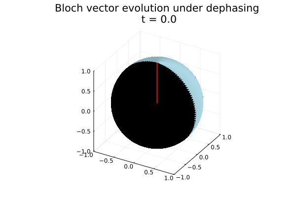
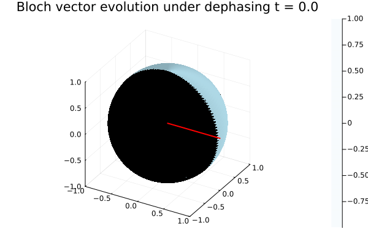

Exercise 1: Dephasing and Relaxation Dynamics
Below are animated visualizations showing the evolution of quantum states. We solve the master equation:
$$\frac{d\rho}{dt} = -\frac{i}{\hbar}[H,\rho] + \frac{\Gamma}{2}(\sigma_z\rho\sigma_z - \rho)$$
with Hamiltonian $H = \frac{\hbar\omega}{2}\sigma_z$
Dephasing of $\sigma_z$ Eigenstate
Bloch vector evolution under dephasing. Initial state is $|1\rangle$. The spin-up state does not change in time since it is an eigenstate of $\sigma_z$.
Parameters: $\omega = 1.0$, $\Gamma = 0.2$
Dephasing of Coherent Superposition
Bloch vector evolution under dephasing. Initial state is $|+\rangle$. It can be seen how the vector curls into the center of the sphere, from a symmetric superposition to a maximally mixed state.
Parameters: $\omega = 1.0$, $\Gamma = 0.2$